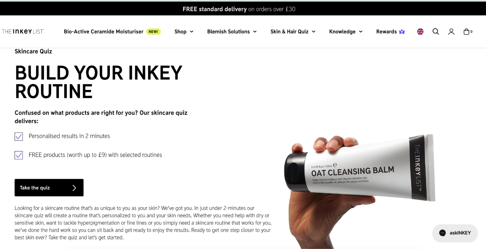
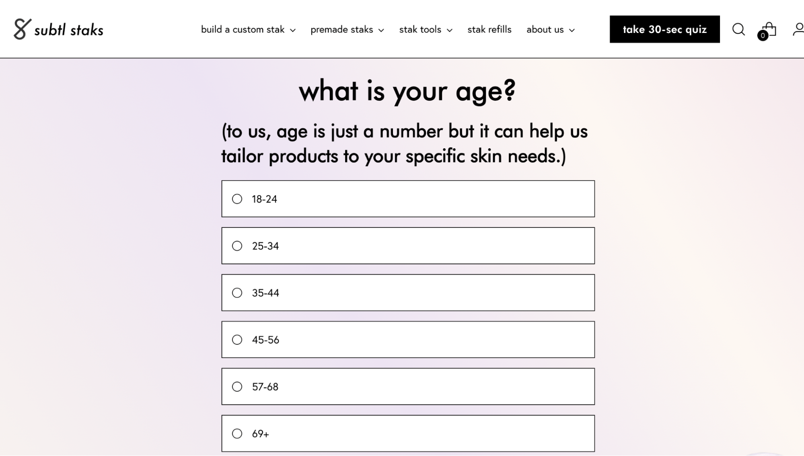
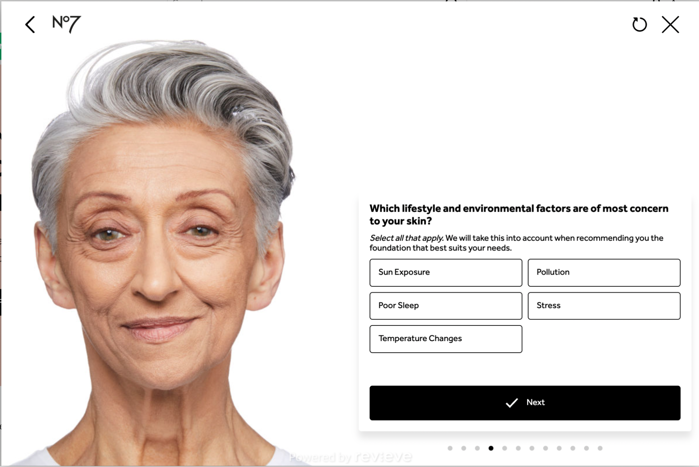
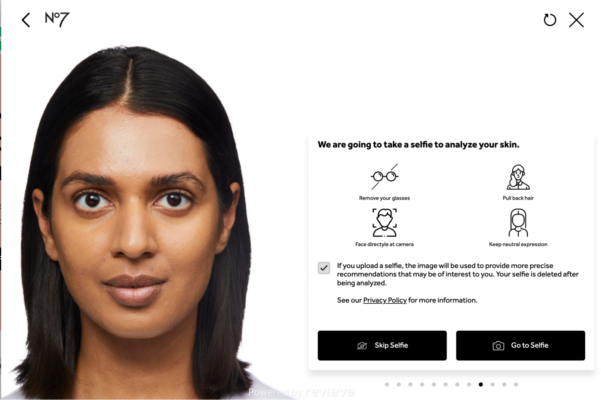
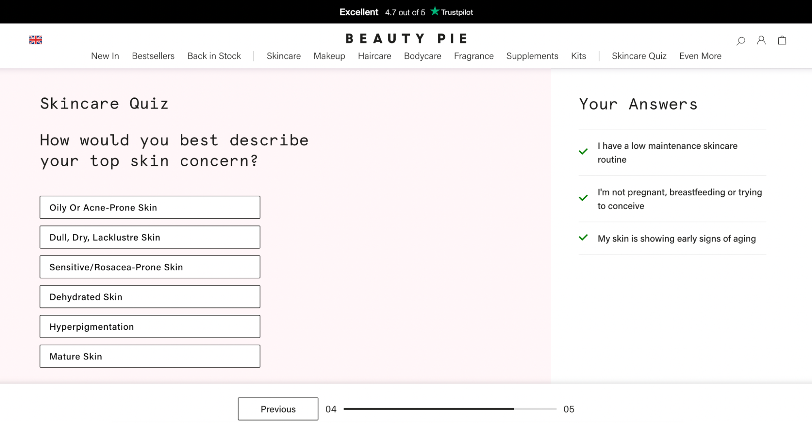
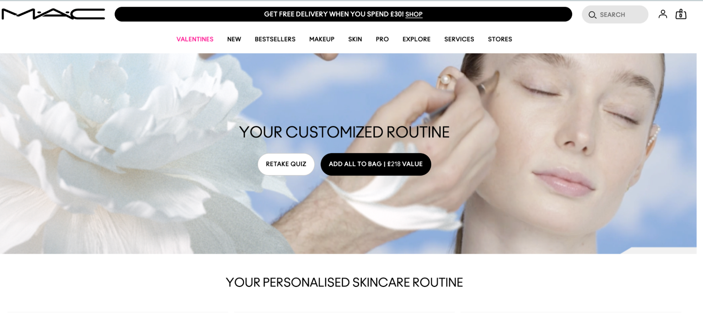

Guide to Creating Cosmetics Customer Surveys: Questions, Strategies, and Templates
As a cosmetics brand you have an opportunity to empower people and make them look and feel their best. To do this, understanding your customers is not just an option—it's a necessity. Why? Because having insights into your customers' cosmetic preferences, needs, and habits is a powerful tool that can significantly impact your offer and the relationship with the customer.
Customer insights can help refine your product range, get feedback on product effectiveness and ensure you are promoting products that match customer’s needs. By aligning your product offerings with your customers' desires and needs, you establish a direct path to customer satisfaction and brand loyalty.
Understanding your customers allows you to tailor your marketing strategies effectively. From, crafting compelling messages, selecting the right marketing channels, or timing your campaigns, customer insights help you to make impactful data-driven decisions.
Plus, customer knowledge enables you to build loyalty and shape your brand to reflect your customers' values and aspirations. In a market increasingly influenced by brand authenticity and alignment with personal values, being a brand that your customers can relate to and trust can set you apart from the competition. And of course, building a positive, authentic and engaging relationship with your customers will ultimately have a positive impact on revenue.
Where to Start
Creating an online survey for a cosmetics brand involves several steps to ensure it gathers relevant information effectively. Here's a basic outline of the process:
- Define your objectives: Determine the purpose of your survey. Are you seeking feedback on why they just purchased, gauging interest in potential new products, understanding customer preferences, making recommendations or something else?
- Identify your target audience: Decide who you want to survey. Are you targeting new customers, loyal customers, or a specific demographic group?
- Understanding your audience will help tailor your questions appropriately.
- Select a survey tool: Depending on your audience size and requirements, select a survey tool that enables you to design, distribute, and analyze your survey efficiently.
- Design your survey: Create a questionnaire that aligns with your objectives and target audience. Keep it concise and focused to maximize response rates. Include a mix of multiple-choice, Likert scale, open-ended, and demographic questions as needed.
- Write clear and unbiased questions: Ensure your questions are easy to understand and free from bias. Avoid leading or loaded questions that could skew responses. Pilot-test the survey with a small group to identify any confusing or ambiguous questions
- Determine distribution channels: Decide how you'll reach your target audience. Options include email invitations, social media posts, website pop-ups, and advertising. Choose channels that are likely to reach your desired respondents effectively.
- Launch the survey: Once everything is set up, launch your survey and begin collecting responses. Monitor response rates and adjust your distribution strategy if needed to increase participation.
- Analyze the results: After the survey period ends, analyze the data to uncover insights and trends. Use built-in analytics tools or export the data to statistical software for more in-depth analysis.
- Draw conclusions and take action: Based on the survey findings, draw conclusions about customer preferences, satisfaction levels, and areas for improvement. Use this information to inform marketing strategies, product development decisions, and customer service initiatives.
- Communicate findings: Share the survey results with relevant stakeholders within your cosmetics brand. Consider creating a report or presentation to highlight key findings and recommendations for action. Responses from surveys are standardly fed back to many areas of the business including - customer experience teams, senior management, product development and of course marketing.
- Show Appreciation: Capturing an email is a standard step in a cosmetics survey, so ensure you follow up with respondents and show appreciation. Consider a thank you incentive and of course now you will be able to tailor your messaging to meet the individual’s needs, which benefits all.
General Quesiton Areas to Consider in your Survey Design
When creating an online survey questions for a cosmetics brand, it's important to gather information that will help you understand customer preferences, experiences, and needs.
Here are some potential survey questions tailored for a cosmetics brand:
Demographic Questions
- What is your age?
- What is your gender?
- What is your location?
Product Usage and Preference Questions
- How frequently do you purchase cosmetics products?
- Which types of cosmetics products do you use regularly? (e.g., skincare, makeup, haircare)
- What are your favorite cosmetics brands?
- How do you typically discover new cosmetics products? (e.g., social media, recommendations from friends, in-store browsing)
- What factors influence your decision to purchase a cosmetics product? (e.g., price, ingredients, brand reputation)
- What is your preferred price range for cosmetics products?
- Are you interested in natural/organic cosmetics products?
- Do you prefer cruelty-free cosmetics products?
- Which specific features or benefits are most important to you when selecting cosmetics products? (e.g., long-lasting wear, moisturizing properties, coverage level)
Brand Perception and Satisfaction Questions
- How satisfied are you with [Your Brand]'s cosmetics products overall?
- How likely are you to recommend [Your Brand]'s cosmetics products to a friend or family member?
- What do you like most about [Your Brand]'s cosmetics products?
- What areas do you think [Your Brand] could improve upon in its cosmetics products?
- How do you feel about [Your Brand]'s pricing compared to other cosmetics brands?
- How do you perceive [Your Brand]'s brand image and identity?
Shopping and Buying Habits Questions
- Where do you primarily purchase cosmetics products? (e.g., online, department stores, specialty beauty stores)
- Do you prefer to shop for cosmetics products in-store or online?
- How often do you research cosmetics products online before making a purchase?
- Have you ever purchased cosmetics products directly from [Your Brand]'s website?
- What factors influence your decision to shop for cosmetics products online versus in-store?
- Do you participate in loyalty programs or subscribe to newsletters for cosmetics brands?
Customer Feedback Questions
- Is there a specific cosmetics product you would like to see [Your Brand] offer in the future?
- Do you have any suggestions for how [Your Brand] can improve its cosmetics products or services?
- Is there anything else you would like to share about your experiences with [Your Brand]'s cosmetics products?
These questions will hopefully inspire you to create your own survey and gain valuable insights.
Real life survey examples from Leading Cosmetics Brands
Here we look at some interesting examples from leading cosmetics brands, including Beauty Pie, MAC Cosmetics, and No 7. Let's delve into each question and learn from best practice surveys.
Questions on Customer Profile
Of course, the first step is enticing customers to take the survey! The Inkey List have chosen to put one of their most popular products front and center and also add an incentive. This is a good tactic and infact, at UserLoop we see incentives bringing a 40% increase in survey responses.
Understanding your customers' demographics is important for most cosmetics brand. Demographic data, from age to lifestyle, provides insights into makeup preferences, purchasing behavior, and trends. For instance, if you cater to a younger demographic, affordability and trendiness could be key factors.
Lets have a look at a quick age question ….
Although its a standard questions the language of the question is still important and sets the tone for the rest of the survey, here the brand is trying to instantly put the customer at ease if they are in the older age groups.
Price sensitivity ….
Whilst you may not want to blazenly ask about income or monthly cosmetics budget. Beauty Pie have taken a more subtle approach that still provides an indication of a customers current monthly investment.
No 7. demonstrates how to elegantly bring a persons environment into quesitons and also cleverly changes the image of the person to match previous answers, helping the respondent to feel understood as the image reflects them.
No 7. Also show how you can incorporate video feedback and AI analytics. In this example they provide an option to take a selfie to be analysed as part of the process to find the perfect foundation colour.. Importantly, this is optional as not everyone will want to take this step.
Questions on Makeup Preferences and Concerns
Understanding your customers' preferences and concerns helps brand tailor products that directly address their specific needs, enhancing their makeup experience and building customer loyalty.
From preferences for cruelty-free products to specific concerns like oily skin or sensitive eyes, each piece of information provides valuable insights into the unique challenges your customers face, allowing you to personalise messaging and product recommendations.
Here are a couple of good examples of how to delve into these nuances.
Here is a good example from Beuaty Pie
By asking these common makeup concerns you can create products that directly address these issues. It also allows for personalized marketing, where you promote products based on each customer's specific concerns.
Of course, in the world of makeup an image speaks a thousands words and you will see many brands using images to help customers make the best choice for their needs.
Contact Detail Capture
At the end of each survey you do of course want to capture peoples contact details. Most brands choose to add this step before recommendations are given to have the best chance of being able to build a relationship based on the insights provided.
Here you can see a great example form INKEY List. INKEY clearly ask for email and even incentivise it with exclusive discounts through automatic signup to their reward program. They do however, clearly make it an optional step, so the customer can still benefit from product recommendations, even if they don’t sign up.
Recommendations
The final step for many beauty surveys is recommendations. For this step we have included three very different examples. You will see that all three have kept true to their brand, even in the way they display recommendations.
MAC displays recommendations in a no fuss way and is all about the product. No 7. has a balanced approach; that, for a high street brand feels very tailored to the customer. And, Benefit is just fun - from the styling to the language and even the products, appealing to the younger - mid audience.
And there we have it, it is clear that a thoughtfully crafted customer survey can uncover a wealth of insights, providing a clear picture of your customer base, their preferences, and how you can best meet their needs. But remember, this is just the beginning.
Translating this valuable information into actionable steps - whether it's tailoring personalized product recommendations, innovating new cosmetics offerings, or devising a more inclusive marketing strategy - is where the true magic unfolds.
Let's not lose sight of our mission: to empower individuals to feel confident and beautiful in their own skin. Understanding their unique beauty journeys is paramount to achieving this goal. With knowledge as our guide, we're equipped to elevate our practices and make a positive impact.
Here's to cultivating a cosmetics landscape that's more personalized, empathetic, and all-encompassing, one survey at a time.
Don't forget to explore UserLoop with a complimentary 14 day trial 👀 - you could be launching your very first customer survey in under 10 minutes, gathering insights that benefit the brand and the customer!
Sign up and start surveying customers today
Install the App on Shopify →Start sureying customers in under 5 minutes
Start building your zero party data customer profile today for free.
Install the App on Shopify →